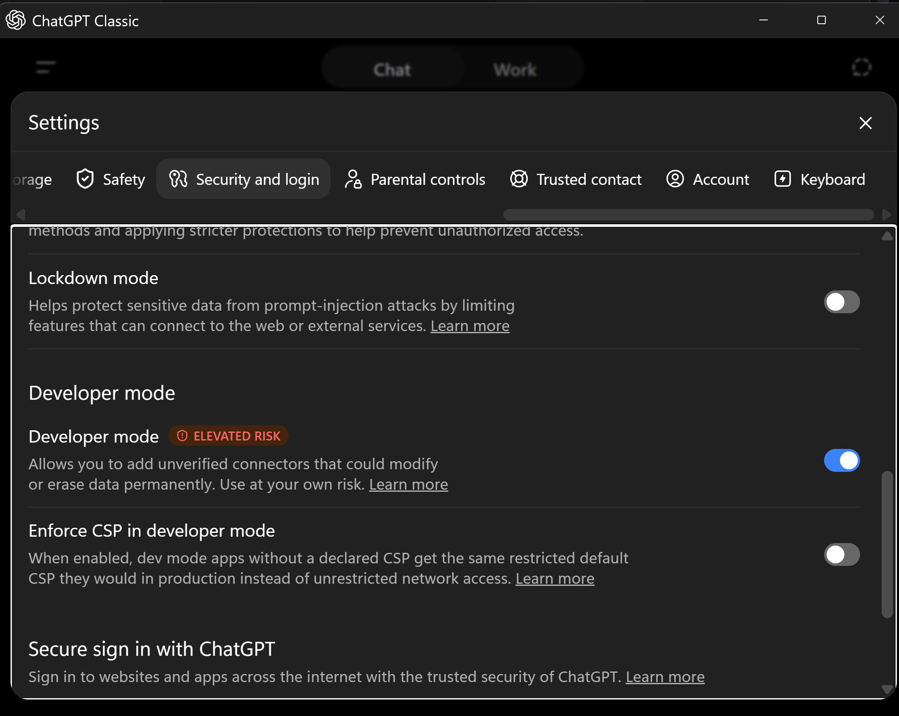
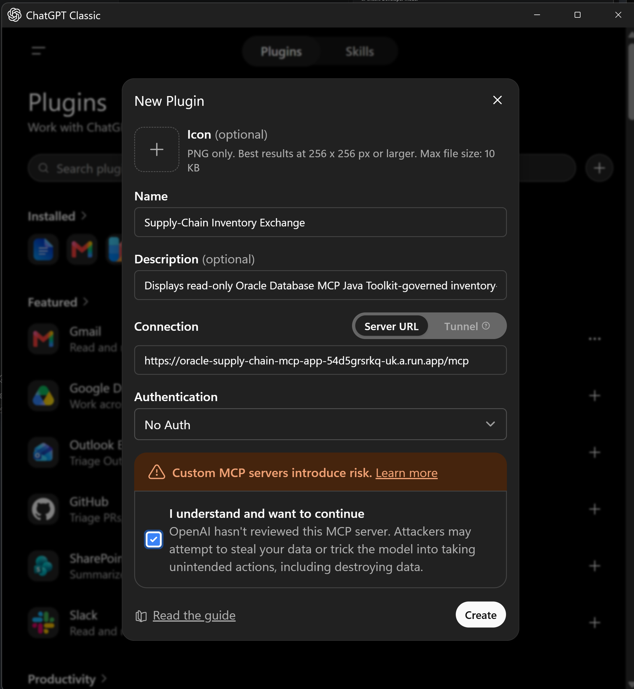
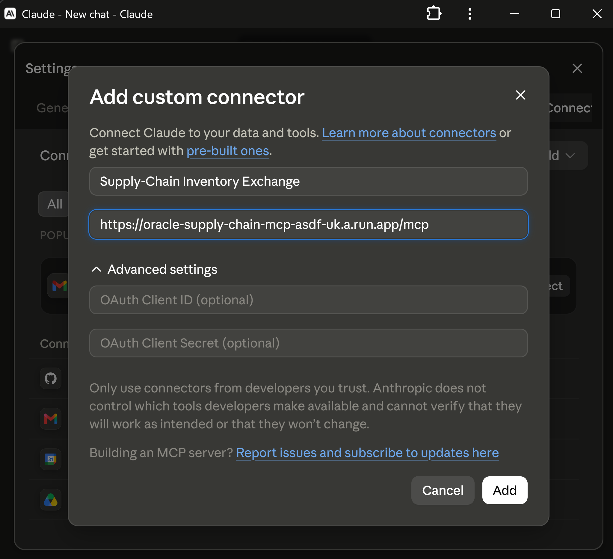

Oracle AI Database · Supply-chain AI · MCP · Agent-to-UI protocols
Develop A2UI and MCP Apps with Oracle AI Database and the Java MCP Toolkit
Find products at risk of stockout, explain the inventory factors, and approve a feasible transfer through trusted native A2UI controls or a rich MCP App, without giving an AI agent unrestricted SQL or write access.
How can an AI agent investigate stockout risk and safely initiate an inventory transfer? This runnable reference application uses Oracle AI Database to calculate feasible source-to-target recommendations from inventory, forecast, safety stock, and transfer-lane data. The Oracle Database MCP Java Toolkit exposes those recommendations as allowlisted tools, AG-UI streams the workflow, A2UI renders native approval controls, and a separate MCP App displays the same governed results in compatible conversational hosts.
The key design choice is that the model and browser do not invent the transfer. Oracle SQL determines the product, source, target, and safe quantity. A person explicitly approves one returned recommendation, and an Oracle stored procedure locks both inventory positions and revalidates the quantities before it reserves stock and records the audited transfer.
The MCP Toolkit approach is perfectly suited to this reference architecture because its governed tool contracts can be reused by multiple agents and MCP-compatible clients. Every application database read and approved write uses the Toolkit; only the separate one-time schema installer connects directly through UCP.
All Java, JavaScript, TypeScript, SQL, YAML, security notes, and setup instructions are in the project folder on GitHub.

Key Takeaways
- Oracle AI Database computes deterministic inventory-transfer recommendations; the Oracle Database MCP Java Toolkit exposes five bounded operations reusable by multiple agents and clients.
- A2UI is a runtime protocol, not a code generator: an agent describes intent as validated JSON and the host renders approved native components from its own design system.
- Rich agent tasks need interfaces beyond chat. A2UI provides safe, consistent composition; MCP Apps provide portable custom web experiences through sandboxed
ui://resources. - Every UI path binds approval to the exact database recommendation, which Oracle revalidates under locks before an atomic write.
Which Protocols Connect Which Responsibility?
MCP connects agents and applications to tools, A2A connects one agent or host to another agent, and A2UI describes a user interface for a trusted host renderer. AG-UI streams an agent run to a custom frontend, while MCP Apps add executable web interfaces to MCP tool results. They are complementary contracts, not interchangeable names for one process.


| Layer | Primary job | In this application |
|---|---|---|
| AG-UI | Stream events and shared state between an agent backend and a custom frontend. | Carries run lifecycle, text, MCP tool activity, A2UI messages, state, and errors over SSE. |
| A2UI | Describe UI structure and data so a host renders trusted native components. | Defines inventory cards, notes, approval, and cancel controls. |
| MCP Apps | Return a rich HTML interface as a ui:// resource for a host sandbox. | Provides the portable recommendation dashboard for compatible conversational hosts. |
| MCP | Standardize discovery and invocation of tools and resources. | Connects the service to five governed Oracle Database operations. |
| A2A | Standardize agent discovery, requests, and results. | Carries host requests and A2UI v0.8 DataParts. |
| Oracle Database MCP Java Toolkit | Expose reusable Oracle Database capabilities. | Runs the exact YAML-defined allowlist of reads and procedure-backed writes. |
| Oracle AI Database | Remain the trusted data and execution layer. | Computes recommendations and enforces locking, transactions, authorization, and auditing. |
The A2A Agent Explicitly Advertises A2UI Support
The adapter publishes a dynamically generated agent card at GET /.well-known/agent-card.json. Its A2A protocol version and A2UI extension are separate declarations, so a host can discover both the communication contract and the supported UI capability before invoking the agent.
build_agent_card() in gemini-enterprise-a2a/main.py creates the live card. The following static representation shows the relevant fields:
{
"capabilities": {
"streaming": true,
"extensions": [
{
"uri": "https://a2ui.org/a2a-extension/a2ui/v0.8",
"description": "Provides agent driven UI using the A2UI JSON format.",
"required": false,
"params": {
"supportedCatalogIds": [
"https://a2ui.org/specification/v0_8/standard_catalog_definition.json"
]
}
}
]
},
"protocolVersion": "0.3.0"
}protocolVersion identifies A2A v0.3. The extension URI advertises A2UI v0.8, and supportedCatalogIds identifies the standard component catalog the agent can produce. Because required is false, the extension is optional for the interaction rather than a requirement imposed on every A2A client. A local run can inspect the generated card with curl -s http://127.0.0.1:3002/.well-known/agent-card.json.
Who Decides Whether to Return A2UI?
Advertising A2UI support does not require every response to contain a UI. An agent implementation can choose text, A2UI, or both according to the request, workflow state, host capabilities, and product policy. That choice can be deterministic application routing, a constrained model decision, or a combination, but the host should still validate every A2UI message against the advertised version and catalog.
In this reference implementation, there is no LLM decision such as “this request needs a UI.” SupplyChainExecutor.execute() makes a deterministic routing decision:
action = _extract_user_action(context)
if action:
parts = await _handle_action(action)
else:
review = await asyncio.to_thread(
_post_agent,
"/api/reviews",
query_parameters,
)
messages = review_messages(
review["recommendations"],
review["approvalId"],
)
parts = [
Part(root=TextPart(text=summary)),
*(create_a2ui_part(message) for message in messages),
]A normal request therefore returns a short text summary plus an A2UI review surface chosen by review_messages(). An approve or cancel userAction returns text plus a smaller A2UI result surface from result_messages(). The current executor does not negotiate host capabilities before adding A2UI, so every successful workflow response contains both forms. A host that does not render the optional A2UI extension can still use the accompanying text part. If the workflow fails, the exception path returns a text error only. More generally, an agent that elects not to return A2UI can return ordinary A2A text or another supported A2A part or artifact.
Why Agent-Generated UI Needs a Runtime Contract
As the Southleft A2UI overview explains, agents increasingly need to present approval workflows, forms, comparisons, and visualizations rather than another chat bubble. The challenge is delivering an interface at runtime without treating unreviewed model output as trusted application code.
The Problem with AI-Generated UI Today
Three common approaches each leave a gap. Generating React or other source code is useful during development, but arbitrary model-generated code should not execute directly in production. Describing a desired interface still requires a developer to implement it. A fixed library of complete widgets is safe but cannot adapt when the conversation requires a slightly different combination.
What A2UI Actually Is
A2UI separates what the agent wants to show from how the host renders it. The agent returns a declarative JSON recipe describing component types, layout, data bindings, and actions. The host validates that data and maps each type to a pre-approved native component from its own design system. The same declaration can therefore preserve a host's styling and accessibility without letting the agent inject JavaScript, call undisclosed APIs, or request components outside the catalog.
A2UI is a runtime interaction protocol, unlike development tools that generate application code for review and deployment. Its component structure uses references between component IDs rather than deeply nesting every element. That flat graph is easier to generate incrementally and lets a renderer update the interface progressively as messages arrive. User actions travel back with explicit context, allowing the agent to update the surface or request a governed backend operation.
Why This Matters Now
Longer, more capable agent workflows need temporary task-specific interfaces: an approval card for one recommendation, a form for missing information, or a comparison assembled from the current conversation. A2UI lets those interfaces appear when needed while the host retains control of components, validation, rendering, and interaction boundaries. In this supply-chain exchange, that means the agent can compose a useful transfer review without generating frontend code or gaining authority over the Oracle transaction.
Choose A2UI Consistency or MCP App Flexibility
| UI contract | How it works | Advantage | Tradeoff |
|---|---|---|---|
| A2UI: consistent and safe | The host renders the agent's validated declarative recipe with trusted native components. | Native appearance, accessibility, predictable behavior, and a host-controlled catalog. | The agent can compose supported controls but cannot invent a new component or arbitrary JavaScript. |
| MCP Apps: maximum flexibility | An agent or MCP server returns an interactive HTML/JavaScript resource through a ui:// pointer; the host renders it in a sandboxed iframe or mobile WebView. | Custom charts, maps, canvases, and complete mini-applications can travel with the MCP server without being prebuilt into every host frontend. | The sandbox adds overhead, Content Security Policy constraints, and a visual boundary that may not perfectly match the host's native interface. |
The practical choice is trust and consistency versus open-ended presentation. This project implements both over the same governed recommendation and approval workflow so the database rules do not change with the host.
From Stockout Analysis to an Inventory-Transfer Decision
Consider the request: “Show inventory at risk of stockout, explain the demand and safety-stock factors, and let me approve a feasible transfer from another location.” A useful supply-chain AI application must expose more than a prose answer:
- the current run status and governed database tool being invoked;
- a bounded list of products and target locations at risk;
- on-hand, reserved, inbound, forecast, safety-stock, and shortage quantities;
- a feasible source location, transfer quantity, transit time, and cost;
- an explicit approval boundary with an operator note; and
- a transfer ID and auditable completion state.
The agent can decide when to request recommendations and how to explain them. It cannot choose an arbitrary transfer quantity, execute generated SQL, create new UI capabilities, or substitute a different source and target after approval.
Where the Protocols Complement and Overlap
A2UI does not mandate one transport. This application carries each A2UI envelope in AG-UI's standard CUSTOM event named a2ui.message. AG-UI supplies lifecycle and state synchronization; A2UI supplies the declarative surface.
This project implements three independent presentation paths: A2UI over A2A for an A2UI-capable host, an MCP App for an MCP Apps-capable host, and A2UI v0.9.1 over AG-UI for the standalone browser. A host adapter selects the wire contract; it does not duplicate inventory rules or approval policy.
In the MCP Apps model, “sandboxed” is a host characteristic, not merely a choice made for this demonstration. The host isolates the returned web application and mediates its access to MCP tools.
AG-UI and MCP both carry tool-related information in different relationships. MCP is the downstream agent-to-tool call. AG-UI is the upstream agent-to-user-interface account of that call, expressed here as TOOL_CALL_START, TOOL_CALL_ARGS, TOOL_CALL_END, and TOOL_CALL_RESULT.
Native A2UI: An A2UI-Capable Host Renders the Agent's Declaration

userAction. Gemini Enterprise is the validated A2UI host in this demonstration, not an exclusive requirement.MCP App: A Capable Host Loads and Bridges a Supplied Web Application

The standalone web-client is intentionally application-specific. It validates allowlisted A2UI state and then constructs this exchange's HTML; it is not a general-purpose native A2UI renderer.
Keep the boundaries clear: the Oracle Database MCP Java Toolkit is database-facing. Orchestration and approval policy belong in the agent service; A2UI rendering belongs in the host or web client; rich MCP App content belongs behind the host bridge.
Model Inventory, Demand, Transfer Lanes, and Audited Actions
The deterministic sample schema contains four locations, five products, twenty inventory positions, twelve active transfer lanes, and an inventory-transfer audit table. Each inventory position tracks quantities needed to assess stockout risk:
CREATE TABLE inventory_positions (
product_id NUMBER NOT NULL,
location_id NUMBER NOT NULL,
on_hand_qty NUMBER(12,2) NOT NULL,
reserved_qty NUMBER(12,2) DEFAULT 0 NOT NULL,
inbound_qty NUMBER(12,2) DEFAULT 0 NOT NULL,
forecast_7d_qty NUMBER(12,2) NOT NULL,
safety_stock_qty NUMBER(12,2) NOT NULL,
last_updated TIMESTAMP DEFAULT SYSTIMESTAMP NOT NULL,
PRIMARY KEY (product_id, location_id)
);The recommendation view first computes projected available stock, target shortage, and source surplus:
projected_available =
on_hand_qty - reserved_qty + inbound_qty
shortage =
greatest(forecast_7d_qty + safety_stock_qty
- projected_available, 0)
transferable_surplus =
greatest(on_hand_qty - reserved_qty
- forecast_7d_qty - safety_stock_qty, 0)For every short target, the view joins feasible sources through active lanes, caps the recommendation at the lesser of target shortage and source surplus, and ranks sources by transit days, available surplus, and unit transfer cost. The result includes a transparent stockout-risk score and a human-readable rationale.
recommended_transfer_qty =
LEAST(target.shortage_qty, source.transferable_surplus_qty)
ROW_NUMBER() OVER (
PARTITION BY target.product_id, target.location_id
ORDER BY lane.transit_days,
source.transferable_surplus_qty DESC,
lane.unit_transfer_cost
) AS source_rankThis is deliberately a clear reference rule, not a full network optimizer. A production supply-chain planning application may add service levels, lead-time distributions, capacity, shelf life, consolidation, priorities, and multi-transfer optimization.
Expose Bounded Supply-Chain Tools with the Oracle Database MCP Java Toolkit
The Toolkit configuration enables exactly five business operations:
find-stockout-transfer-recommendationsreturns bounded recommendations above a risk threshold.get-stockout-transfer-detailsretrieves one current recommendation by its compound ID.reserve-inventory-transfer-idobtains the next audit identifier.approve-inventory-transfercalls the locked, procedure-backed write.count-inventory-transfersverifies the resulting audit record.
Terminology: “bounded” or “narrow” is descriptive shorthand here, not a formal MCP or Oracle Toolkit tool category. It means a purpose-built, allowlisted operation with constrained inputs and outputs, bind variables, explicit validation, and least-privileged database access. Those properties make behavior safer, more deterministic, and more auditable than unrestricted SQL; they do not make a tool absolutely safe.
toolsets:
supply-chain-exchange:
- find-stockout-transfer-recommendations
- get-stockout-transfer-details
- reserve-inventory-transfer-id
- approve-inventory-transfer
- count-inventory-transfers
tools:
find-stockout-transfer-recommendations:
dataSource: financial-db
parameters:
- name: minimumStockoutRisk
type: number
required: true
- name: maximumRows
type: integer
required: true
statement: >-
SELECT * FROM (
SELECT *
FROM stockout_transfer_recommendation_v
WHERE stockout_risk_score >= :minimumStockoutRisk
ORDER BY stockout_risk_score DESC
) WHERE ROWNUM <= :maximumRowsMcpToolkitSupplyChainRepository launches the pinned official Toolkit over stdio, completes MCP initialization, verifies the server identity, and requires the exact supply-chain-exchange allowlist. Built-in read-query, write-query, table, and administration tools are never enabled.
Stdio compatibility: the pinned Toolkit revision can announce dynamic tool-list changes before its stdio transport is ready when several tools register at startup. The build applies a checked-in one-line patch that disables only those stdio list-change notifications. Static discovery and invocation remain enabled, and the agent fails closed unless all five expected tools, and no others, are present.
Stream the Investigation with AG-UI
The Java service emits official AG-UI event names over Server-Sent Events. Approval is application state in a STATE_SNAPSHOT, not an invented protocol event:
RUN_STARTED
STEP_STARTED
TEXT_MESSAGE_START
TEXT_MESSAGE_CONTENT
TOOL_CALL_START
TOOL_CALL_ARGS
TOOL_CALL_END
TOOL_CALL_RESULT
STEP_FINISHED
STATE_SNAPSHOT status = AWAITING_APPROVAL
CUSTOM name = a2ui.message
TEXT_MESSAGE_END
RUN_FINISHEDThe frontend can show what is happening before the entire recommendation set arrives and can correlate tool arguments and results using one toolCallId. A production adapter should also propagate cancellation and deadlines from the browser through the MCP call.
Render Recommendation and Approval Controls with A2UI
The application creates one A2UI v0.9.1 surface, supplies an adjacency-list component tree, and sends the recommendation data separately:
{
"version": "v0.9.1",
"createSurface": {
"surfaceId": "inventory-transfer-review",
"catalogId": "https://a2ui.org/specification/v0_9_1/catalogs/basic/catalog.json",
"sendDataModel": true
}
}The renderer accepts only the expected version, catalog, surface, envelope shapes, and component types. Generated values enter the DOM through textContent; no A2UI payload can provide executable JavaScript.
The application does not present generic, application-authored follow-up choices. Each selectable card is a concrete recommendation produced by STOCKOUT_TRANSFER_RECOMMENDATION_V, and the only write action is to approve that exact transfer with an operator note or cancel it.
Add a Supply-Chain Dashboard with MCP Apps
The web application at http://127.0.0.1:8080 demonstrates AG-UI and A2UI. The separate mcp-app/ package is a real MCP App demonstration that can run in the official MCP Apps basic host without a third-party account.
registerAppTool(server, "show-inventory-transfer-dashboard", {
title: "Show inventory transfer dashboard",
inputSchema: {
minimumStockoutRisk: z.number().min(0).max(100),
maximumRows: z.number().int().min(1).max(50)
},
_meta: {
ui: { resourceUri: "ui://oracle-supply-chain/inventory-exchange-v2" }
}
}, async ({ minimumStockoutRisk, maximumRows }) => {
const review =
await loadGovernedReview(minimumStockoutRisk, maximumRows);
return {
structuredContent: {
recommendations: review.recommendations,
source: "oracle-db-mcp-java-toolkit"
},
_meta: { approvalId: review.approvalId }
};
});
registerAppTool(server, "approve-inventory-transfer", {
inputSchema: {
approvalId: z.string().uuid(),
recommendationId: z.string(),
approvalNotes: z.string().min(10).max(500)
},
_meta: { ui: { visibility: ["app"] } }
}, approveExactReviewedTransfer);The model-visible tool calls /api/reviews on the Java service. The service invokes the Toolkit's allowlisted read tool and binds a short-lived approval handle to the exact returned rows. The handle travels in widget-only result metadata rather than model-visible content. Selecting a card calls updateModelContext; approving or canceling calls an app-only tool that the model cannot invoke. The iframe receives neither wallet files nor database credentials.
Full Setup and Runtime Walkthroughs for A2UI and MCP Apps
The following walkthroughs show the validated host examples in detail: MCP Apps in ChatGPT and Claude, followed by native A2UI over A2A in Gemini Enterprise. These products demonstrate the two UI approaches without defining or limiting which capable hosts can implement them.
Run the MCP App in ChatGPT
Status: read-only flow validated end to end on August 3, 2026. ChatGPT discovered the bounded MCP tool, called it with the requested limits, loaded the ui:// resource, and rendered the live Oracle Database MCP Java Toolkit result inline.
OpenAI's current flow calls the host integration a plugin backed by an MCP connection. The server exposes the component as a ui:// resource with media type text/html;profile=mcp-app, while its public Streamable HTTP endpoint normally ends in /mcp. This repository already implements that resource, tool metadata, host bridge, read-only dashboard tool, and app-only approval and rejection tools.
ChatGPT plugin / MCP connection
| public HTTPS Streamable HTTP: /mcp
v
TypeScript MCP App server
| ui:// resource + app-only action tools
v
Java approval service -> Oracle DB MCP Toolkit -> Oracle AI DatabaseVerified Cloud Run and Oracle Database preflight
On August 3, 2026, a separate oracle-supply-chain-mcp-app Cloud Run service was built and deployed in adb-pm-prod/us-east4. It packages the TypeScript MCP App server, Java approval service, pinned Oracle Database MCP Java Toolkit, and wallet mount in one container. Direct VPC egress reaches the private paulparkdb_tp service. The already-working Gemini Enterprise A2A service remains isolated and unchanged.
The new revision was verified while private: anonymous health returned HTTP 403; an authenticated health request returned UP; MCP discovery returned the dashboard tool and its ui:// metadata; reading the resource returned text/html;profile=mcp-app; and invoking the dashboard returned the live WATER-SENSE recommendation from PHX-DC to SEA-FC with risk 74.6 and source oracle-db-mcp-java-toolkit.
After explicit authorization, revision oracle-supply-chain-mcp-app-00003-dkl opened a time-bounded anonymous read-only validation window with one warm instance. An external, unauthenticated preflight returned HTTP 200, discovered exactly one tool named show-inventory-transfer-dashboard, loaded the MCP App resource, and returned the same live Toolkit-governed row. ChatGPT then rendered that component and its model-readable result. The public server returned no approval handle and registered neither approval nor rejection tools.
No Compute Engine resize is required. The MCP endpoint runs as its own Cloud Run service with 2 vCPU, 2 GiB RAM, concurrency 10, and a single-instance maximum, matching the proven Gemini container envelope. The additional runtime is one Node process. For interactive host testing, one minimum instance avoids the cold-start timeout previously observed when Java, the Toolkit, and the adapter all started from zero.
Authentication boundary: Cloud Run IAM is suitable for the private preflight but ChatGPT cannot present Google service-account or custom API-key credentials. OpenAI's current guidance permits anonymous read-only MCP servers, but requires OAuth 2.1 for customer-specific data or write actions. The deployment therefore defaults to private and read-only. Its script refuses to combine anonymous access with -EnableWriteActions; approval will be tested only after OAuth is configured. Immediately after this test, the allUsers invoker grant was removed, minimum instances returned to zero, and the service became private again.
Final setup and verification steps
- Run
deploy/gcp/deploy-chatgpt-mcp.ps1to build and deploy the private read-only service. It reuses the existing wallet and password secrets but creates a distinct Cloud Run service and image. - With a Google identity token, verify
/health,tools/list,resources/read, and a read-onlytools/call. Confirm that anonymous access still returns 403. - Choose the access gate. For the first synthetic-data rendering test, explicitly authorize a short-lived public read-only window and keep
MCP_WRITES_ENABLED=false. For durable use or any approval action, configure an established OAuth 2.1 provider and validate issuer, audience, expiry, and scopes on every MCP request. - In ChatGPT, open Settings > Security and login and enable Developer mode. Workspace policy can control whether this setting is available.
- Open Plugins, select the plus button, name the plugin Supply-Chain Inventory Exchange, use the description “Displays read-only Oracle Database MCP Java Toolkit-governed inventory-transfer recommendations,” choose No Auth only for this synthetic read-only test, and enter the Cloud Run URL ending in
/mcp. - Acknowledge the custom-MCP warning, create and connect the plugin, then inspect its metadata. Discovery must show only
show-inventory-transfer-dashboardwithminimumStockoutRiskandmaximumRowsinputs. - Start a new conversation, add Supply-Chain Inventory Exchange from the tools menu, and ask: “Show the inventory transfer dashboard for products with a minimum stockout risk of 70, limited to 3 recommendations.”
- Verify that ChatGPT calls the tool with
minimumStockoutRisk=70andmaximumRows=3, renders the embedded component, labels the result as live data from the Toolkit, and shows the sameWATER-SENSE,PHX-DCtoSEA-FC, 42-unit, risk-74.6 recommendation returned by the private preflight. - Capture sanitized host evidence, remove public Cloud Run invocation, and return minimum instances to zero. Refresh the plugin connection whenever tool or resource metadata changes.




Developer-mode caveat: the first component load returned a transient “Failed to fetch template” message and the retry rendered successfully. This run also had developer-mode CSP enforcement off. A later revision added an explicit self-contained _meta.ui.csp. It deliberately omits optional _meta.ui.domain because Claude and ChatGPT validate that stable sandbox origin with different host-specific formats and this app does not run iframe-local OAuth. ChatGPT should be retested with CSP enforcement on before publication or authenticated writes. The active-looking review affordance in this historical read-only capture could not perform a database write because the server issued no approval handle and registered no action tools; the updated repository build instead shows an explicit mode banner and disabled Read-only preview control.
Run the MCP App in Claude
Status: read-only browser flow validated end to end on August 6, 2026. Claude discovered the custom connector, called its one bounded interactive tool, received the live Oracle Database MCP Java Toolkit result, and rendered the same ui:// MCP App used by ChatGPT.
Claude connects to a remote MCP server from Anthropic's cloud. Therefore the same public HTTPS /mcp endpoint can be reused, but a private, VPN-only, or loopback endpoint is insufficient unless the network is configured for Anthropic's published access requirements. The temporary validation endpoint exposed only synthetic read-only data: it returned no approval handle, registered no action tools, and kept MCP_WRITES_ENABLED=false.
Claude interactive connector
| public remote MCP endpoint: /mcp
v
Same TypeScript MCP App server
| ui:// resource + one bounded read-only tool
v
Java approval service -> Oracle DB MCP Toolkit -> Oracle AI DatabaseVerified setup and invocation steps
- Deploy the same Streamable HTTP MCP App service used by ChatGPT. Keep the safe defaults private and read-only; use a short-lived anonymous window only with explicit authorization and synthetic data.
- In Claude, open Settings > Connectors, select Add > Add custom connector, provide a descriptive name, and enter the public URL ending in
/mcp. Leave OAuth fields empty only for the explicitly authorized anonymous read-only test. - Open the connector detail page. Confirm that it is connected and exposes exactly one interactive tool, Show inventory transfer dashboard. Choose whether Claude may invoke it automatically, ask each time, or never.
- Start a new chat, open the plus menu, enable Supply-Chain Inventory Exchange, and allow connector search if Claude presents that separate discovery opt-in.
- Ask:
Show the inventory transfer dashboard for products with a minimum stockout risk of 70, limited to 3 recommendations.
- Verify the model-visible tool result and inline widget both report the same Toolkit-backed row:
WATER-SENSE,PHX-DCtoSEA-FC, 42 units, and stockout risk 74.6. - After validation, remove anonymous invocation and return minimum instances to zero. Configure OAuth 2.1 before exposing customer-specific data or registering the approval and rejection tools.


/mcp. The URL visible in this setup illustration is not a credential and should be replaced with the current deployment URL.


show-inventory-transfer-dashboard, displayed the Toolkit result, and rendered the same Oracle-backed MCP App inline. The screenshot predates the final read-only affordance fix: its active-looking Review this transfer button could not write because no approval handle or action tool existed; the updated repository build replaces it with a disabled Read-only preview control and an explicit mode banner.Cross-host lessons: the first attempt returned the live tool result but rejected the UI because its optional ui.domain used ChatGPT's Cloud Run origin instead of Claude's connector-URL-derived *.claudemcpcontent.com format. This app needs no stable iframe origin, so the portable resource omits ui.domain, keeps a self-contained CSP, awaits app.connect(), and versioned the resource URI to inventory-exchange-v2 to bypass cached markup. The installed Chrome-app/PWA surface still produced a generic Unable to reach message during this test, while opening the same Claude session in a regular Chrome tab rendered successfully. That surface difference should be retested after Claude updates; it was not a database or MCP reachability failure.
Run Native A2UI in Gemini Enterprise
Gemini Enterprise is the A2UI-capable host validated in this reference application. Its custom-agent path uses A2A as the conversation transport and A2UI as declarative UI cargo. As of July 28, 2026, the native A2UI feature is Preview, supports A2A v0.3 compatibility, and renders A2UI v0.8 rather than the v0.9.1 envelopes used by this application's standalone browser. This is one implementation example, not a coupling between A2UI and Gemini Enterprise.
Separate A2A Transport from A2UI Presentation
In this repository, gemini-enterprise-a2a/main.py co-locates the A2A endpoint, request executor, Java API client, and deterministic A2UI v0.8 builder in one process. That is a compact implementation choice, not a protocol requirement. A2A carries messages, tasks, artifacts, and DataParts between Gemini Enterprise and the remote agent; A2UI is the declarative presentation placed in those DataParts.


The agent card shown near the beginning of this article advertises the A2UI v0.8 extension and standard catalog that this co-located builder produces. A decoupled implementation would advertise the same external contract.
Follow the Native A2A/A2UI Path
Gemini Enterprise
| A2A v0.3 JSON-RPC
| A2UI v0.8 DataParts
v
gemini-enterprise-a2a
| POST /api/reviews, /api/approve, /api/reject
v
Java agent service
| Oracle Database MCP Java Toolkit
v
Oracle AI DatabaseThe adapter emits deterministic beginRendering, surfaceUpdate, and dataModelUpdate messages containing native cards, approval notes, and one button per exact recommendation. Gemini Enterprise resolves the button context into a v0.8 userAction; the adapter forwards only the approval handle, recommendation ID, and notes. The Java service recovers the immutable recommendation and Oracle revalidates it under locks. Every host-specific adapter shares this governed workflow and transaction without sharing a UI protocol.
Deploy the Gemini adapter on Google Cloud
Gemini Enterprise requires a reachable HTTPS A2A endpoint; it does not require the agent to run on a Compute Engine VM. Google's reference integration uses Cloud Run, which supplies managed HTTPS and can reach a private VPC through Direct VPC egress when required. For this deployment, the existing adb-pm-prod project already contains the global Inventory System Gemini Enterprise app and the paulparkdb Autonomous Database in us-east4. That database advertises wallet-authenticated TCPS services, so a separate VM is unnecessary.
Gemini Enterprise: Inventory System
| managed HTTPS
v
Cloud Run: oracle-supply-chain-a2ui
| IAM-authenticated adapter :8080
| loopback Java service :8081
| stdio MCP Toolkit child
v
paulparkdb_tp in Oracle Database@Google CloudThe Cloud Run image contains the adapter, Java service, and pinned Toolkit but no secret. Secret Manager mounts the Oracle wallet ZIP and injects the dedicated FINANCIAL password at runtime. The entrypoint expands the wallet into ephemeral storage, derives the JDBC URL from DB_SERVICE_NAME=paulparkdb_tp, starts Java only on loopback, waits for its health check, and then exposes the A2A adapter on Cloud Run's assigned port.
The checked-in deploy/gcp scripts build the image with Cloud Build, create a least-purpose runtime service account, limit Cloud Run to one instance while approval handles remain in memory, set the final service URL in the agent card, and register that card through the official Discovery Engine assistants/default_assistant/agents REST resource. The deployed endpoint rejects anonymous calls and grants roles/run.invoker only to Gemini Enterprise's Discovery Engine service agent. Google's Cloud Run guidance recommends this IAM model for internal clients such as Gemini Enterprise; an OAuth client is needed only when the agent must access Google resources on behalf of the end user.
The paulparkdb private endpoint is reached through Cloud Run Direct VPC egress on the associated default VPC and subnet. A VM in that VPC remains a valid alternative, but the protocol and A2UI implementation do not change. The deployment was validated end to end on August 3, 2026: anonymous discovery returned HTTP 403, authenticated discovery returned HTTP 200, Gemini Enterprise reported the agent ENABLED, and a live A2A streaming request returned native A2UI v0.8 content from the Oracle-backed workflow.
Register, share, and invoke the custom agent
The deployed agent card was registered with the global Inventory System app as the custom A2A agent Oracle Supply-Chain A2UI. Registration is app- and location-specific: the Discovery Engine resource path names adb-pm-prod, global, the app ID, default_assistant, and the agent. The agent was then shared with the test user using the per-agent Agent User role. A Gemini Enterprise Standard license was distributed to the same project and global location and assigned to that user; licensing is an account prerequisite, not part of the application architecture.

Oracle Supply-Chain A2UI is registered and enabled as a custom A2A agent for the app.In the Gemini Enterprise web app, the shared agent appears under From your organization. The prompt Show inventory transfers with a minimum stockout risk of 70, limited to 3 recommendations
invokes the agent over authenticated A2A streaming. Oracle returned the one row in the sample data that met that threshold: a 42-unit WATER-SENSE transfer from PHX-DC to SEA-FC with a stockout-risk score of 74.6. Gemini Enterprise rendered the returned A2UI DataParts as a native card, approval-notes field, exact-transfer approval button, and cancel-without-writing button. The host never loaded the MCP App iframe.

The first interactive request also exposed an operational detail worth retaining in the runbook. With Cloud Run scaled to zero, the combined Java, Toolkit, and Python container took long enough to start that Cloud Run aborted the waiting request and Gemini reported an invalid SSE response with an HTML content type. Cloud Run logs showed the aborted request followed by successful initialization of all five allowlisted Oracle MCP tools. Retrying against the warm instance returned HTTP 200 with text/event-stream and rendered correctly. For a scheduled demonstration, warm the service immediately beforehand or configure a minimum instance, understanding that a minimum instance adds continuous Cloud Run cost.
Bind Human Approval to One Exact Transfer
When the read completes, the agent service issues a short-lived approval ID bound to the actor and an immutable map of every returned recommendation. The browser posts only the approval ID, recommendation ID, and notes. It cannot replace the product, source, target, or quantity.

The Toolkit's YAML schema does not currently express callable OUT parameters, so the write path first reserves a transfer ID from a sequence and then calls an input-only procedure. Inside the procedure, Oracle locks the source and target inventory positions in location order, recomputes current surplus and shortage, and rejects any quantity greater than the current safe amount:
v_safe_transfer_qty := LEAST(v_source_surplus, v_target_shortage);
IF p_transfer_qty > v_safe_transfer_qty THEN
RAISE_APPLICATION_ERROR(
-20007,
'Recommendation is stale; current safe transfer quantity is ' ||
TO_CHAR(v_safe_transfer_qty));
END IF;
INSERT INTO inventory_transfers (...);
UPDATE inventory_positions
SET reserved_qty = reserved_qty + p_transfer_qty
WHERE product_id = p_product_id
AND location_id = p_source_location_id;The insert and inventory reservation are one tool statement and one transaction. Canceling consumes the pending approval without invoking the write. Reuse, an actor change, an unknown recommendation, invalid notes, or stale inventory causes rejection.
Run the Supply-Chain Exchange
The default configuration reuses the financialdb_high database alias and FINANCIAL schema from the observability demo. Copy the environment template, point it at the wallet, and supply the password locally:
cd a2ui_mcpapps_mcptoolkit
cp .env.example .env
# Set DB_PASSWORD and confirm WALLET_DIR.
cd agent-service
./setup-database.sh
./test.sh
./run.sh
# Open http://127.0.0.1:8080The guarded installer creates the supply-chain objects without dropping or modifying unrelated schema objects. The runtime launches a pinned revision of the Oracle Database MCP Java Toolkit over stdio, enables only supply-chain-exchange, verifies the exact tools, and lets the Toolkit's UCP pool own every runtime database connection.
Walk Through the Application End to End
- Prepare the database. Run
agent-service/setup-database.sh. The installer creates four locations, five products, twenty inventory positions, twelve lanes, the recommendation view, the transfer sequence, and the input-only approval procedure. - Start the Java service and Toolkit. Run
agent-service/run.sh.McpToolkitSupplyChainRepositorystarts the Toolkit over stdio, completes MCP initialization, verifies its identity and exact tool allowlist, and exposes the web client and API. - Open the inventory exchange. Browse to
http://127.0.0.1:8080. The page contains the request form, AG-UI event rail, and an initially empty A2UI surface. - Set the query bounds. Choose a minimum stockout-risk score and maximum recommendation count, then run the analysis. The service validates both values and begins the SSE response.
- Retrieve governed recommendations. The repository calls
find-stockout-transfer-recommendations. The Toolkit borrows a UCP connection, binds the values, queriesSTOCKOUT_TRANSFER_RECOMMENDATION_V, and returns structured rows through MCP. - Inspect the streamed result. AG-UI displays the lifecycle and tool activity. A2UI renders cards with SKU, product, source, target, stockout risk, shortage, recommended quantity, transit time, unit cost, and rationale.
- Approve or cancel. Select one database-returned recommendation, enter approval notes, and approve. The short-lived approval token recovers the exact bound transfer. Cancel instead consumes the approval and performs no write.
- Commit through MCP. The Toolkit reserves an ID and invokes
APPROVE_INVENTORY_TRANSFER_MCP. Oracle locks and revalidates both positions, writesINVENTORY_TRANSFERS, reserves the source quantity, and commits only the successful statement. - Run the smoke test. From another terminal, run
scripts/smoke-test.sh. It exercises the live recommendation, approval, rejection, and health paths. - Open the MCP App locally. Keep the Java service running. Run
mcp-app/run.sh, thenmcp-app/run-basic-host.shin a third terminal. Openhttp://127.0.0.1:8082, selectshow-inventory-transfer-dashboard, and invoke it. Select a card and verify both explicit approval and cancel paths. - Use the MCP App in ChatGPT. Deploy the dedicated Cloud Run MCP service, enable ChatGPT Developer Mode, and register the public URL ending in
/mcpas a plugin connection. For the verified read-only phase, select it and ask: “Show the inventory transfer dashboard for products with a minimum stockout risk of 70, limited to 3 recommendations.” Confirm the live Toolkit-backed card, then revoke the temporary public invoker grant. - Use native A2UI in Gemini Enterprise. Deploy the adapter to authenticated Cloud Run, register its card as a custom A2A agent in the same app and location as the user license, and grant the user the per-agent
Agent Userrole. Open the shared agent under From your organization and submit the stockout-risk prompt. Gemini Enterprise renders the A2UI v0.8 review natively. - Use the MCP App in Claude. Register the same public read-only
/mcpendpoint as a custom connector, verify its single interactive tool and permissions, enable it for a new conversation, and submit the bounded stockout-risk prompt. Confirm the Toolkit result and inline MCP App, then revoke the temporary public invoker grant.
Security and Governance Checklist
- Use a least-privileged database principal with only the required view and procedure grants.
- Use stdio for the local child process; use TLS and OAuth 2.0 for remote MCP.
- Enable only purpose-built tools. Do not use
-Dtools=*or unrestrictedwrite-query. - Validate and bind every user value; enforce score, row-count, text-length, and timeout limits.
- Bind approval to actor, recommendation data, expiry, and a single use; add durable idempotency for production.
- Revalidate current inventory under locks at the final database boundary.
- Log tool, actor, timestamp, recommendation, approval, and status without logging secrets.
- Allowlist A2UI catalogs and components; treat MCP App content as untrusted and apply sandbox, CSP, and permission controls.
- Keep wallets, passwords, tokens, and client secrets out of the browser, model context, and repository.
Decision Guide
| Use | When |
|---|---|
| AG-UI | You own a custom agent frontend and need streamed messages, tool activity, progress, and synchronized state. |
| A2UI | The agent should compose native, accessible controls from a restricted catalog without sending executable code. Gemini Enterprise is the validated example in this project. |
| MCP Apps | An MCP Apps-capable host needs a sandboxed HTML dashboard, chart, canvas, or complex embedded workflow. ChatGPT and Claude are the validated examples in this project. |
| Oracle Database MCP Java Toolkit | Governed Oracle data and transactional business operations must be exposed as reusable MCP tools. |
| A2A | An A2A-capable host needs to discover and invoke the externally hosted agent. |
| Combined pattern | A supply-chain experience needs one governed domain workflow presented through host-specific transport and UI adapters. |
Limitations and Next Steps
This reference application uses a transparent single-transfer heuristic. It does not claim to replace supply-network optimization, order management, transportation planning, or warehouse execution. It also uses in-process approval state and a local stdio Toolkit child process. Gemini Enterprise discovery, authenticated A2A streaming, the Oracle-backed query, and native A2UI rendering have been validated end to end. ChatGPT and Claude in a regular browser have validated MCP discovery, the ui:// resource, the Oracle-backed read-only tool, and inline MCP App rendering end to end. The installed Chrome-app/PWA Claude surface still needs a compatibility retest. Approval in any MCP App host remains intentionally unverified until actor-bound OAuth write semantics are tested, write tools are enabled, and durable approval state replaces the in-process prototype.
Gemini Enterprise's A2UI support is Preview and currently limited to v0.8. The browser's v0.9.1 payload and Gemini Enterprise's v0.8 payload are intentionally separate builders over one domain API. Future host upgrades should be handled by explicit capability/version negotiation and compatibility tests rather than silently changing every client at once.
Production next steps include authenticated identity, durable approvals and idempotency, Oracle row-level authorization, Streamable HTTP with TLS and OAuth 2.0, Model Armor configured in the A2A application path, location and value authority limits, concurrent-transfer testing, richer forecasting, and an optimizer that evaluates multiple interacting transfers. Gemini Enterprise's console-level Model Armor settings do not automatically protect a separately hosted A2A agent. Vector search or retrieval-augmented generation could add policy and disruption explanations, while the deterministic database operation remains the final execution boundary.
References
- Source code for this supply-chain reference application
- Oracle Database MCP Java Toolkit README
- AG-UI protocol overview
- A2UI project and specification
- Southleft: A2UI, How AI Agents Build Real User Interfaces
- MCP Apps overview
- Build an MCP App
- Official MCP Apps SDK, examples, and basic host
- Google Cloud Run service-to-service authentication
- OpenAI: add UI to an MCP server
- OpenAI: authenticate plugin MCP servers
- Connect and test a ChatGPT plugin
- Anthropic: get started with custom connectors using remote MCP
- Anthropic: use interactive connectors in Claude
- Anthropic: use connectors to extend Claude's capabilities
- Anthropic: troubleshoot MCP Apps in Claude
- Anthropic: build cross-platform MCP Apps
- Gemini Enterprise: register an A2UI/A2A agent
- Gemini Enterprise: register an A2A agent
- Google Cloud: deploy A2A agents to Cloud Run with IAM
- Gemini Enterprise: host an A2UI agent on Cloud Run
- Google Cloud: guide to Gemini Enterprise and A2UI integration
- Google A2UI source and examples
- A2UI reference implementation linked by Google
- Google Cloud Run Direct VPC egress
- Oracle Database@Google Cloud ODB network setup
- Oracle Database@Google Cloud network topologies
- Model Context Protocol specification
- Agent2Agent protocol documentation
- Oracle AI Database
Frequently Asked Questions
Who determines the inventory-transfer action?
The Oracle recommendation view determines the product, source, target, and safe quantity from governed inventory and lane data. The model explains and presents the recommendation; the person approves or cancels it; the procedure revalidates it before writing.
Does A2UI replace AG-UI?
No. A2UI describes UI surfaces and data; AG-UI carries agent events and state. This application transports A2UI messages inside AG-UI custom events.
Does the MCP App replace the web client?
No. The custom web client demonstrates AG-UI and A2UI. The separate MCP App renders the same Toolkit-backed recommendations inside a compatible conversational host.
Are A2UI and MCP Apps tied to specific host products?
No. They are capability-based UI contracts. This project validates Gemini Enterprise as one A2A/A2UI host and ChatGPT and Claude as two MCP Apps hosts, while keeping the governed Java service, Toolkit tools, recommendation IDs, and Oracle transaction boundary independent of those examples.
Why not let the agent generate SQL or choose any transfer?
A bounded recommendation view and stored procedure make the allowed data, feasibility formula, privileges, locks, transaction, and audit result explicit. Unrestricted SQL or client-selected quantities would expand the attack surface and make execution less deterministic.
Where is approval enforced?
The agent service binds approval to the authenticated actor and exact returned recommendation. The MCP tool accepts only validated inputs, and Oracle AI Database locks and rechecks current stock before it commits the transfer.